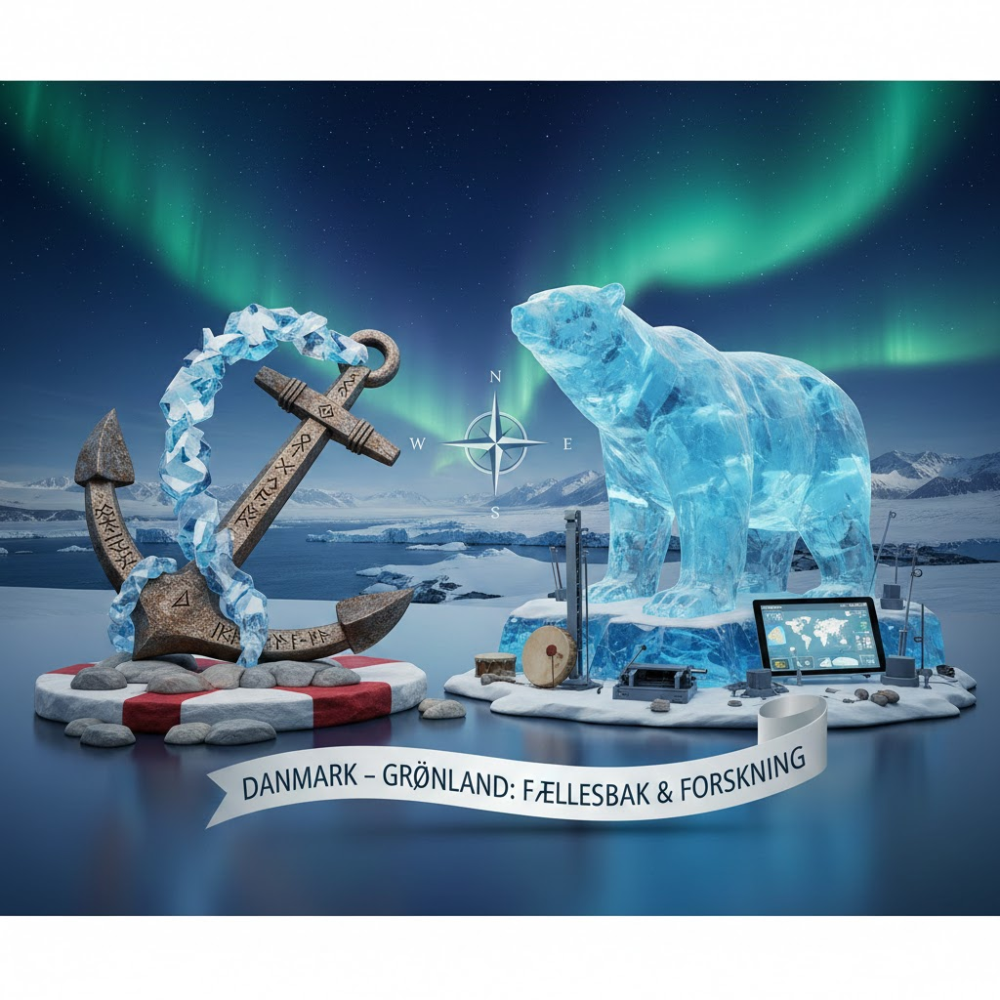
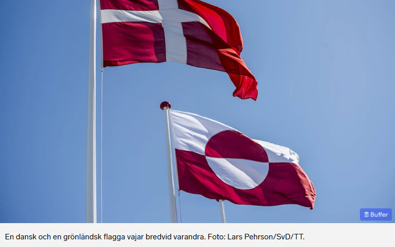

Danmark, Grönland & Sverige
Historia, koloniala relationer och nordiskt broderskap
Sida 1 av 5
Historia, koloniala relationer och nordiskt broderskap
Detta quiz körs via GitHub Pages. Se källkoden på:
📂 GitHub Repository: quiz/21/

Bildkälla: Illustrationer av Danmark-Grönland-relationen
Nu är du redo! Testa dina kunskaper om nordisk historia och koloniala relationer! 🇩🇰🇬🇱🇸🇪
Filstruktur: Detta quiz är byggt med separation of concerns-principen, där HTML, CSS och JavaScript är uppdelade i separata filer:
Att dela upp kod i separata filer ger flera fördelar:
Skapad: 2026-01-23
Quiz nr: 21 i serien Fredagsquiz
Baserad på: Blogginlägg "Efter 21 krig kom freden – men för vem?" samt historiska källor om Danmark-Grönland-relationen och Sverige-Danmark-historien.
Fokus: Koloniala relationer, nordisk historia och vägen mot försoning.
Quiz nr 21: Danmark, Grönland och Sverige – Historia och Relationer
Frågor och fördjupade förklaringar baserade på (i Harvard-format):
Detta quiz utforskar den komplexa historien mellan Danmark och Grönland – från kolonisering till självstyre – samt den långa konflikthistorien mellan Sverige och Danmark som nu förvandlats till broderskap.
🌍 Fokus: Koloniala relationer, historiska trauman, självständighetssträvanden och nordisk försoning.
Läs det fullständiga blogginlägget: "Efter 21 krig kom freden – men för vem?"
Läs mer på bloggen: Controller utan gränser